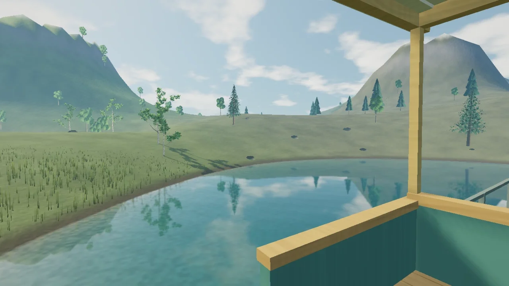

描画 · 2026年10月20日
Haskellでつくる
3D描画の基盤
形、影、水面の反射を同じ世界から描く。ちらつきの修正を通じて、座標の型、純粋な描画計画、GPUとの境界を設計しました。
記事を読む開発者向け
Stillroomは、Haskellとraylibでつくった音楽と風景のアプリです。
設計の考え方を、動く実装とあわせて紹介します。

描画 · 2026年10月20日
形、影、水面の反射を同じ世界から描く。ちらつきの修正を通じて、座標の型、純粋な描画計画、GPUとの境界を設計しました。
記事を読む